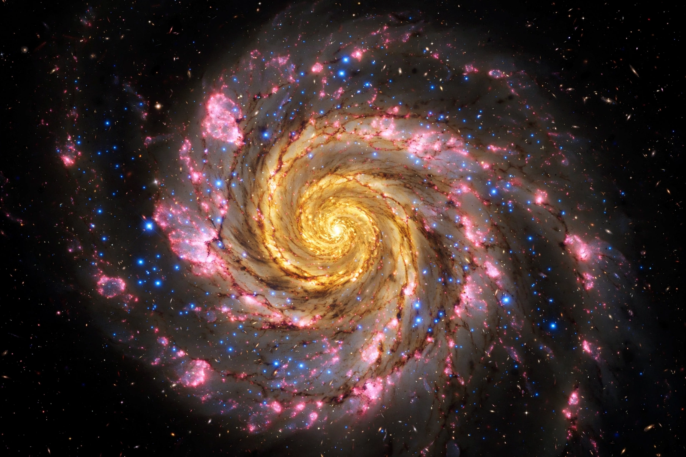

Galaxy

[Image: a grand spiral galaxy face-on, arms of blue young stars and pink star-forming regions around a golden core]A galaxy is a system of stars, stellar remnants, interstellar gas, dust, dark matter and sometimes a central supermassive black hole, bound together by gravity. The word comes from the Greek galaxias, "milky", a reference to the Milky Way. Galaxies range from dwarfs with a few hundred million stars to giants with one hundred trillion stars, each orbiting the galaxy's centre of mass.
Early telescopes revealed fuzzy "nebulae" among the stars; only in the 1920s did Edwin Hubble's measurements show most were separate galaxies far beyond our own. Estimates of their number in the observable universe range from 200 billion to two trillion.
Types
Edwin Hubble's classification scheme divides galaxies into ellipticals (smooth, featureless light distributions), spirals (discs with spiral arms; barred spirals like the Milky Way and Andromeda have a central bar), lenticulars (intermediate) and irregulars. Most galaxies host a supermassive black hole at their centre; active galaxies and quasars shine brilliantly when that hole accretes matter.
Formation and groups
Galaxies formed from density fluctuations after the Big Bang and grew by merging. They cluster into groups (our Local Group), clusters of hundreds or thousands, and superclusters along cosmic filaments, leaving vast voids. Observations by the Hubble and James Webb telescopes, publicised by NASA and ESA, now reach galaxies formed within a few hundred million years of the Big Bang.